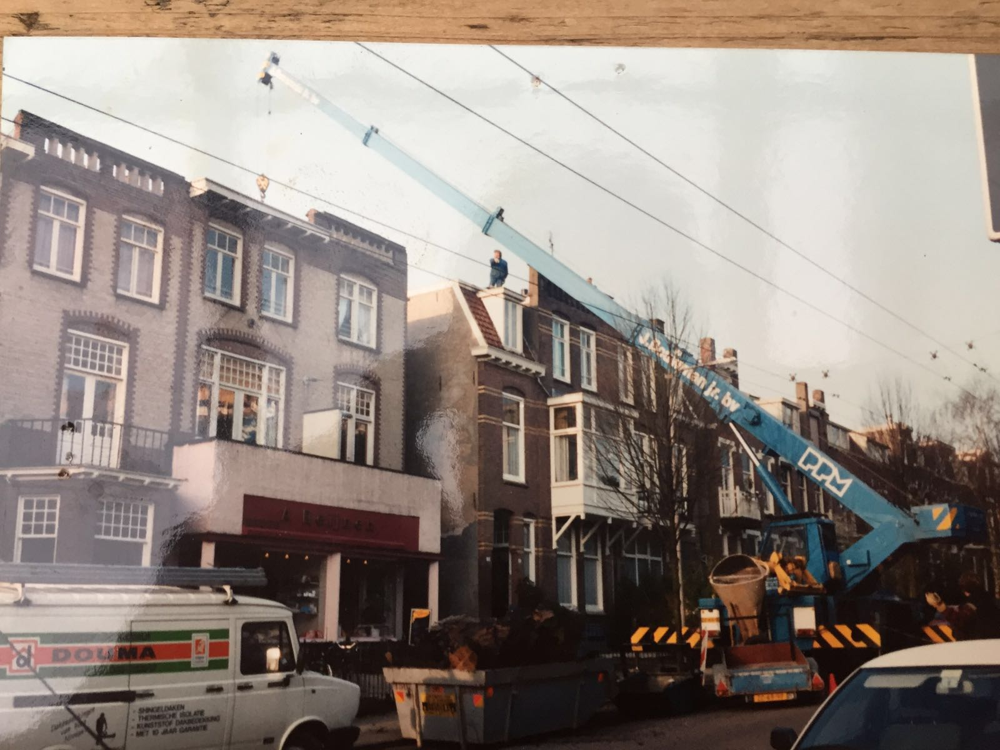

Over ons
Een dakdekkersbedrijf met een mooie geschiedenis!
Familiebedrijf Douma Dakdekkers
Het familiebedrijf Douma kent een historie van bijna 86 jaar. De 1e generatie Hendrik Douma meldde zich in 1929 bij de Kamer van Koophandel onder de naam Douma Loodgieters en legden de basis voor een respectabel bedrijf.
In 1955 nam Kas Douma sr. het bedrijf over van Hendrik Douma De diensten werden uitgebreid met dak werkzaamheden.
Na jaren van scholing en werkervaring te hebben opgedaan bij zijn vader en opa, melde de vierde generatie Kas Douma jr. zich in 2012 bij de Kamer van Koophandel onder de naam Kas Douma dakbedekking & onderhoudsbedrijf.
In ons huidige personeelsbestand is totaal 100 jaar ervaring aanwezig. Dit geeft nogmaals aan dat het familiebedrijf-gevoel hoog in ons vaandel staat. Iedere dag zien wij weer de uitdaging om klanten tevreden te stellen. Wij vragen ons slechts nog af: wanneer wordt u onze nieuwe klant?
Douma's historie
1929
Het bedrijf werd opgericht. De 1e generatie Hendrik Douma meldde zich in 1929 bij de Kamer van Koophandel onder de naam Douma Loodgieters en legden de basis voor een respectabel bedrijf.
1955
Generatie op generatie. In 1955 nam Kas Douma sr. het bedrijf over van Hendrik Douma, de diensten werden uitgebreid met dak werkzaamheden.
2012
Vol vertrouwen, na jaren van scholing en werkervaring te hebben opgedaan bij zijn vader en opa, meldde de vierde generatie Kas Douma jr. zich in 2012 bij de Kamer van Koophandel onder de naam Kas Douma Dakbedekking & Onderhoudsbedrijf.
Kas Douma
Dakbeddeking en onderhoudsbedrijf
Als u op zoek bent naar een dakdekker in de regio Arnhem, dan moet u bij Kas Douma dakbeddeking en onderhoudsbedrijf zijn! Wij zijn een dakdekkersbedrijf met een mooie geschiedenis in Arnhem en omstreken. Ons bedrijf doet grote en kleine projecten,zowel nieuwbouw als renovatie. Voor zakelijke en particuliere relaties. Wij bieden een hoogwaardige kwaliteit en een brede dienstverlening met uitstekende service.
Kas Douma
Eigenaar van Kas Douma Dakbeddeking en onderhoudsbedrijf
Douma Sr. aan het werk in 1976
Wegens succes bouwt Douma Sr. zijn eigen bedrijfspand in 1979

Douma Sr. breidt zijn werkzaamheden uit
Waarom Douma Dakdekkers?
Betrouwbaar
Met betrouwbare vakmensen en lange historie heeft u met Douma de specialist in huis voor uw dak!
Betrouwbaar
Met betrouwbare vakmensen en lange historie heeft u met Douma de specialist in huis voor uw dak!
Betrouwbaar
Met betrouwbare vakmensen en lange historie heeft u met Douma de specialist in huis voor uw dak!
Betrouwbaar
Met betrouwbare vakmensen en lange historie heeft u met Douma de specialist in huis voor uw dak!
Betrouwbaar
Met betrouwbare vakmensen en lange historie heeft u met Douma de specialist in huis voor uw dak!
Betrouwbaar
Met betrouwbare vakmensen en lange historie heeft u met Douma de specialist in huis voor uw dak!